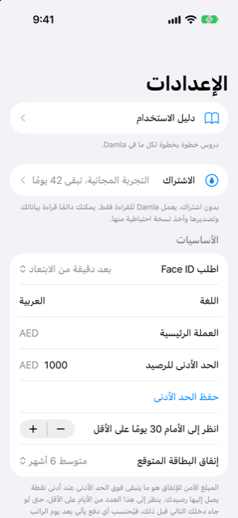

الدليل › الإعدادات والنسخ الاحتياطي والخصوصية
الإعدادات، صفحة بصفحة
أين يوجد كل شيء في الإعدادات.
في الإعدادات توجد عناصر التحكم اليومية: القفل، والحد الأدنى للرصيد، والتنبيهات، وبيانات السوق، والأتمتة، ونسخك الاحتياطية. هذه الصفحة خريطة من الأعلى إلى الأسفل.

متى تستخدمها
- عندما لا تتذكر في أي صفحة يوجد إعداد ما.
- عندما تريد أن تعرف ماذا تفعل صفحة قبل أن تفتحها.
خطوة بخطوة
- افتح اليوم واضغط على أيقونة الترس أعلى اليمين. بهذا تُفتح الإعدادات.
- اضغط على أي صف لفتح تلك الصفحة؛ وزر الرجوع يعيدك.
الصفحات، من الأعلى إلى الأسفل
من الأعلى إلى الأسفل، القائمة هي دليل الاستخدام، ثم الاشتراك، ثم قسم الأساسيات، ثم صفوف بقية الصفحات.
دليل الاستخدام
دروس خطوة بخطوة لكل شيء في Damla. أيقونة الكتاب في اليوم تفتح الدليل نفسه.
الاشتراك
الاشتراك موجود في هذه الصفحة. انظر التجربة المجانية والاشتراك.
الأساسيات
| الإعداد | ماذا يفعل |
|---|---|
| طلب Face ID | في كل مرة، أو بعد غياب مدته 1 أو 5 أو 15 دقيقة. |
| العملة الرئيسية | العملة التي يُجمع بها كل شيء. لا يمكن تغييرها من هنا. |
| الحد الأدنى للرصيد | المبلغ الذي تريد أن يبقى دون مساس. أدخله واضغط حفظ الحد الأدنى. |
| النظر إلى الأمام ما لا يقل عن … يومًا | إلى أي مدى ينظر التوقع حتى عندما يأتي دخلك القادم أسرع. من 0 إلى 90 يومًا، بخطوات من 5 أيام. |
| الإنفاق المتوقع على البطاقة | مُعطَّل، أو متوسط 3 أو 6 أو 12 شهرًا؛ فهو يكمل فواتير البطاقة للكشوفات التي لم تُصدر بعد. وحالما يُصدر كشف، يأخذ مبلغه الحقيقي مكانه. |
المبلغ الآمن للصرف هو ما يتبقى فوق الحد الأدنى عند أدنى نقطة، لذا فإن الحد الأدنى والنظر إلى الأمام كلاهما يغيّره.
التنبيهات
- نبّهني قبل حلول الاستحقاقات: إشعار قبل يوم واحد وفي اليوم نفسه للفواتير والدخل وفواتير البطاقة المستحقة وغير المسجَّلة بعد. أنت تختار الساعة، من 06:00 إلى 22:00.
- نبّهني عندما قد ينخفض رصيدي عن الحد الأدنى: إشعار واحد، يُحسب على هذا الهاتف من بياناتك.
إذا كنت قد أوقفت الإشعارات لـ Damla من إعدادات iPhone، فهناك سطر هنا يخبرك بذلك.
العملات والأسعار
- بيانات السوق: فعِّل تحديث أسعار الصرف يوميًا والبحث عن أسعار الاستثمارات، أو اضغط حدّث الآن للجلب فورًا. التحديث اليدوي يحاول دائمًا جلب أسعار الصرف، وجلب أسعار الاستثمارات فقط إذا كان ذلك المفتاح مفعّلًا. بعد التحديث، يعرض تقرير ما حدّثه كل مصدر أو تجاهله أو فشل فيه. وتعرض الصفوف آخر وقت حُدِّث فيه كل مصدر.
- مشتريات البطاقة بعملة أخرى: هامش البنك الذي يقدّره Damla ويحسب به (2.5% عند تركه فارغًا)، وكيفية قراءة كلمات العملات القصيرة مثل "DH" و"DHS" في رسائلك — كعملتك الرئيسية، أو كعملة AED أو MAD.
- أسعار الصرف: صف واحد لكل عملة تستخدمها، مع السعر الساري، وهل هو مُجلوب أم من إدخالك، وتاريخه. ويمكنك كتابة سعرك الخاص.
- الرموز: صف واحد لكل استثمار، لجلب سعره.
كلا البحثين اختياري والتطبيق يعمل دون اتصال. التفاصيل: الأسعار وأسعار الصرف.
الفئات
أضف الفئات، وغيّر أسماءها أو احذفها. التفاصيل: المستفيدون والفئات.
رسائل البنك وكشوف الحساب
- الأتمتة (الاختصارات): كيف تصل رسائل بنكك ورسائله الإلكترونية ومدفوعات Wallet إلى Damla، وخطوات كل أتمتة.
- التنبيهات الأخيرة: ماذا فعل Damla بالرسائل التي وصلته، وأين تتراجع عن تنبيه. انظر ما يتجاهله Damla، والتراجع عن تنبيه.
- كلمات مرور كشوف الحساب: كلمات المرور التي حفظها Damla لكشوف PDF المقفلة، في Keychain في هذا الهاتف. نسيان … كلمات المرور المحفوظة يحذفها؛ وعند عدم وجود كلمات محفوظة يقول القسم: لا توجد كلمات مرور كشوف حساب محفوظة. لا تغادر هذه الكلمات الهاتف أبدًا وهي ليست في النسخ الاحتياطية.
النسخ الاحتياطي وبياناتك
- النسخ الاحتياطي التلقائي: مرة واحدة في اليوم، عند مغادرة Damla، تذهب نسخة مشفّرة إلى مجلد تختاره. وتُحفظ أحدث 7 نسخ.
- تصدير المعاملات: ملف CSV بكل معاملة، لكل السنوات أو لسنة واحدة تختارها. اضغط إنشاء ملف CSV، ثم المشاركة لحفظه أو إرساله.
- تصدير نسخة احتياطية مشفّرة: ملف مشفّر بكلمة مرور لا تقل عن 8 أحرف. احتفظ بكلمة المرور في مكان آمن.
- الاستعادة من نسخة احتياطية: اختر الملف، وأدخل كلمة المرور. إنها تستبدل كل البيانات على هذا الهاتف.
- العائلة: إنشاء لقطة للعائلة يصنع صورة لأرقام اليوم للقراءة فقط، مشفّرة بكلمة مرور تخبر بها الشخص الآخر. يفتحها هو في Damla على هاتفه؛ وهي لا تُحدَّث.
- حذف جميع البيانات يمسح كل شيء على هذا الهاتف. لا يمكن التراجع عنه: صدّر نسخة احتياطية أولًا إن كان من الممكن أن تحتاجها.
دليل الإعداد
يعيد تشغيل دليل الإعداد، لتتمكن من إنهاء أي شيء تخطّيته في المرة الأولى.
من الجيد أن تعرف
ذو صلة
هل هناك شيء غير واضح أو ناقص؟ اكتب إلى support@raveniq.ai واذكر الصفحة.